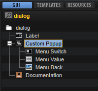

/ HALion Developer Resource / HALion Tutorials & Guidelines / How-tos /
Custom Popup Menus
On this page:
The standard menu control can be used to set parameters offering a list of options, e.g., the oscillator type of a synth oscillator. Allthough the menu control is a fast way to implement selection menus, its disadvantge is that it always uses the look of the operating system menus. If you want to implement a menu that follows the look and design language of your instrument, you can create menu templates that are openend via a switch using the pop-up style.
This how-to demonstrates how to build a custom pop-up menu for the ocillator type of a synth oscillator. This is how it looks on the macro page if the pop-up menu is opened:

❕ The menu in the example below shows all oscillator types in a long list. If you want to create a menu with mutiple levels, please refer to Custom Multi-Level Menus, Custom Multi-level Menus II or Multi-Level System Menus.
❕ HALion 7 introduced another method for creating custom pop-up menus making use of exported variables. See Working with Exported Variables for details.
Example VST Preset

To explore the templates in this example:
- Load Custom Popup Menus.vstpreset.
- Open the Macro Page Designer, go to the Templates Tree and select the template you want to explore.
- Click Edit Element
 to examine the template.
to examine the template.
Prerequisites
- A program with a synth zone and a macro page.
- A Group with a Switch, a Text and an Image control.
- A Simple Menu template for the pop-up menu.
- A SimpleMenuEntry template for creating the entries of the pop-up menu.

How the Elements Interact
Custom Popup
The Custom Popup Group contains the elements that are needed to open the pop-up menu and to display the selected value.

Menu Switch is a Switch control that is configured to open the pop-up menu. It uses the Popup style with the Simple Menu template which contains a Template List that uses the SimpleMenuEntry template for displaying the available options. Menu Value is a Text control for displaying the current value and Menu Back is an Image control for the background image.
Menu Switch
This Switch control is used to open the Simple Menu template as a pop-up. Since it is combined with a background image and a text, the switch itself does not require any graphics. To open the pop-up menu, the properties of the switch must be set to the following values:
| Property | Values |
|---|---|
| Mode | push |
| Style | Popup |
| Template | Simple Menu |
| Close on Click | Inside, Outside |
| Placement | Place Left, Place Right, Place Below |
Menu Value
This Text control is connected to the oscillator type parameter and displays the selected type.
Menu Back
This Image control displays the background image, in this case, a black panel.
Simple Menu
This template contains a template list view that uses the SimpleMenuEntry template to create the entries of the pop-up menu.

The Value is connected to the oscillator type for switching the types. To create the entries for the available types, the template parameter MenuText must be connected to the oscillator type. The look of the entries is defined in the SimpleMenuEntry template.
SimpleMenuEntry
This template represents one entry in the pop-up menu and is instanciated for each oscillator type.

Text
This Text control displays the name of an entry. The control is set to Read-only so that the text cannot be edited. The Value property is exported and named MenuText on the template level. The entries in the pop-up are created by connecting the exported parameter in the template list view to the oscillator type.
Switch
This Switch control provides the hover image when moving the mouse over an entry.
Image
This Image control displays the gray background for an entry.
❕ Pop-up menus can only be displayed within the dimensions of the macro page. If a pop-up menu is too large, it will be clipped. To prevent this, you can either change the direction in which the pop-up menu opens, e.g., open it to the top instead of to the bottom, or you can change the size of the template, so that it fits, and then activate the scrollbar to be able to scroll to the available entries.